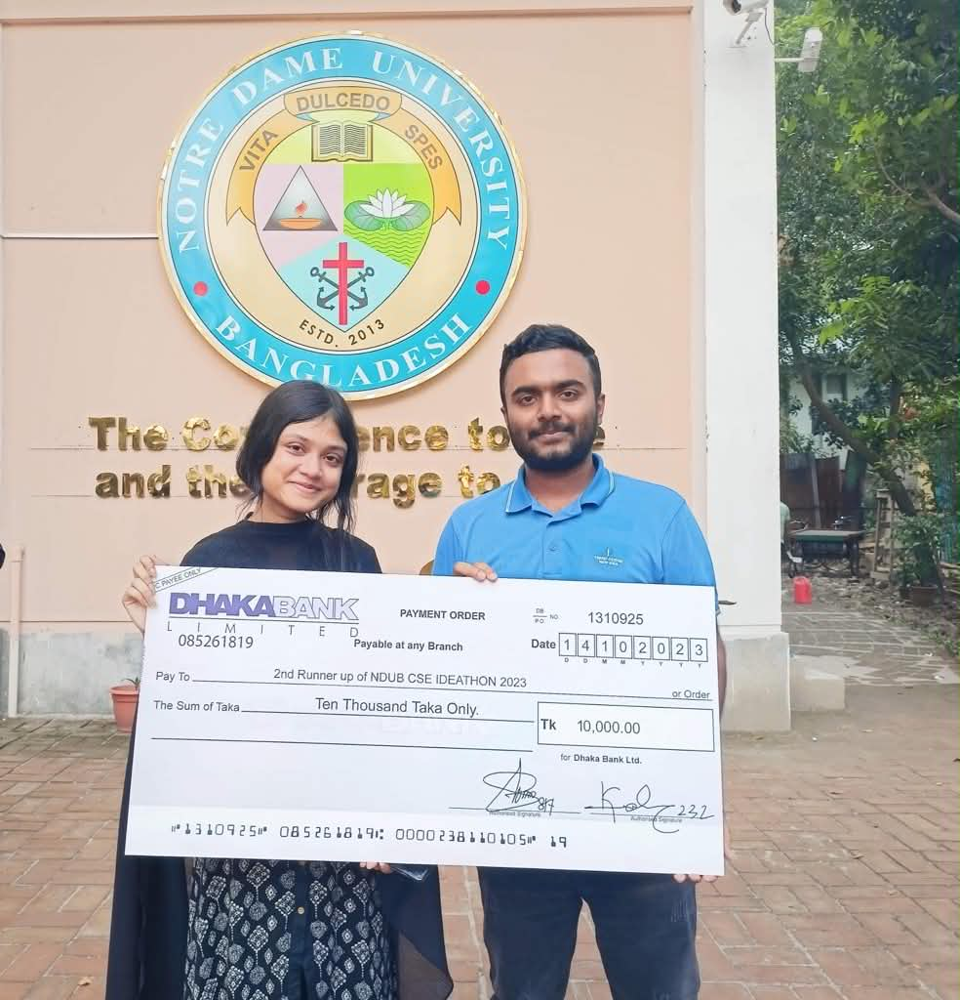
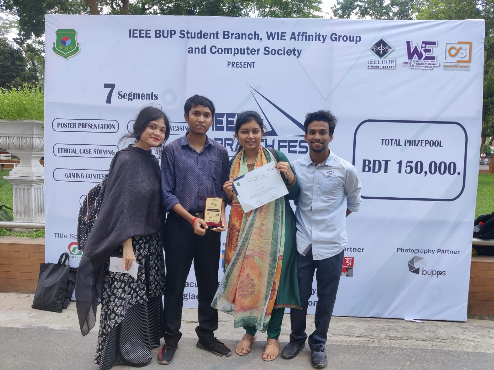

2025
Research Award
Excellence in Research Award
Samsung R&D Institute Bangladesh
Received the Excellence in Research Award for contributions to research and innovation at Samsung R&D Institute Bangladesh.
A record of professional recognition, research accomplishments, and academic competition awards.
Samsung R&D Institute Bangladesh
Received the Excellence in Research Award for contributions to research and innovation at Samsung R&D Institute Bangladesh.
Samsung R&D Institute Bangladesh
Proposed an AI-based approach for face-anonymization real time. The idea received the highest votes among 293 SRBD engineers and was recognized as the People's Champion.
Samsung R&D Institute Bangladesh
The proposal was the only idea selected from Samsung R&D Institute Bangladesh for presentation at the Mobile Developer Conference.

Champion · 2023
UI/UX Design Contest · Cefalo Presents ITverse 2023
Secured the Champion position in an inter-university UI/UX design competition focused on developing effective and user-centered digital experiences.
.png)
Champion · 2023
Hackathon Blockchain Challenge · Cefalo Presents ITverse 2023
Secured the Champion position in a blockchain-focused hackathon by developing and presenting a technical solution within a competitive, time-constrained environment.
.png)
First Runner-Up · 2023
Software Project Showcasing · Cefalo Presents ITverse 2023
Achieved First Runner-Up in the software project showcasing competition for presenting an innovative technical project and demonstrating its practical impact.

Second Runner-Up · 2023
NDUB CSE Fest 2023
Achieved Second Runner-Up for developing and presenting an innovative technology-based solution.

Second Runner-Up · 2023
IEEE BUP Branch Fest 2023
Achieved Second Runner-Up for demonstrating the design, implementation, and potential impact of a software project.